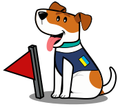
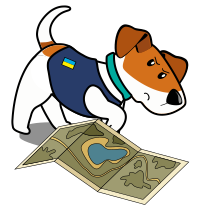

Знайдено 5 із 25 об’єктів
Помітив схожий предмет у реальному житті - не підходь та не
зрушуй з місця.
1. Відійди на безпечну відстань ( понад 300
м.).
2. Повідом іншим про знахідку за можливості познач
місце добревидимим орієнтиром.
3. Звернися до
спеціалізованих органів (зателефонуй на номер 101 або 102 та
вкажи місце знаходження небезпечного предмета).
4. Очікуй
на приїзд спеціалізованої служби на безпечній відстані.
Спотті - безстрашний пес-розміновувач із відмінним нюхом. Для
нього не проблема знайти будь-який вибухонебезпечний
предмет.
Донедавна він жив спокійним життям, але звідкіля не візьмись
на його територію прийшов клишоногий рашист. Негідник приніс
чимало біди, бо повсюди порозкидав велику кількість предметів,
що несуть загрозу.
Тепер на плечах у Спотті важлива
місія: знайти всі небезпечні об’єкти та прогнати бурого
окупанта, щоб той мазав п'яти салом і давав драпака.
Використовуй клавіші ←↓↑→ щоб рухатися по території. Щоб відмітити небезпечний предмет прапорцем, використовуй клавішу “пробіл” або кнопку 🚩.
Не дай рашистам та техніці окупантів пройти поряд: бойовий качур допоможе тобі в цьому. Тебе очікує 5 різних локацій для знешкодження загарбників, та фінішний рівень в бункері, де твоя ціль - путін.
Дисклеймер
Даний ресурс носить розважальний характер. Всі персонажі та описані
події є вигаданими, будь-який збіг з реальними особами або подіями,
є випадковістю.
Рівень пройдено
Місцевість очищена від усіх небезпечних предметів.
Спробуй ще раз
На території залишилися ще небезпечні предмети. Знайди їх.